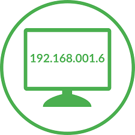
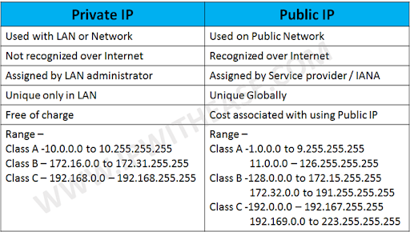

IP Adress
The IP address is a set of numbers that identifies, in a logical and hierarchical way, an interface on the network (communication / connection element) of a device (computer, laptop, smartphone) that uses the protocol (Internet Protocol) or , which corresponds to the network level of the TCP / IP model.1 The IP address should not be confused with the MAC address, which is a 48-bit identifier expressed in hexadecimal code, to uniquely identify the network card and does not depend of the connection protocol used in the network.
Lessons
Class A: 0.0.0.0 a 127.255.255.255 – Mask /8 Used by large private networks, such as a multinational.Reservado 0.0.0.0/8 (de 0.0.0.0 a 0.255.255.255)
Reservado 127.0.0.0/8 (de 127.0.0.0 a 127.255.255.255)
Class B: 128.0.0.0 a 191.255.255.255 – Mask /16 Used by medium-sized networks, such as an SME or a study center.
Class C: 192.0.0.0 a 223.255.255.255 – Mask /24 Used by medium-sized networks, such as home.
Class D: 224.0.0.0 a 239.255.255.255
Class E: 240.0.0.0 a 255.255.255.255
Private addresses
There are certain addresses in each class of IP address that are not assigned and are called private addresses. Private addresses can be used by hosts that use Network Address Translation (NAT) to connect to a public network or by hosts that do not connect to the Internet. Three non-overlapping ranges of IPv4 addresses are reserved for private networks.10 There cannot be two identical addresses in the same network, but they can be repeated in two private networks that do not have a direct connection to each other or that connect through a third party to do NAT.
Net mask
The network mask allows distinguishing within the IP address, the bits that identify the
network and the bits that identify the host. In an IP version 4 address, of the 32 bits that
re had in total, they are defined by default for a class A address, that the first eight (8)
bits are for the network and the remaining 24 for the host, in an address of class B, the first
16 bits are the network part and the host part is the next 16, and for a class C address,
the first 24 bits are the network part and the remaining eight (8) are the host part .
For example, from the class A address 10.2.1.2 we know that it belongs to the 10.0.0.0
network and the host or host it refers to is 2.1.2 within it.
The mask is formed by setting the bits that identify the network to 1 and the bits that
identify the host to 0.12 In this way, a class A address will have a default mask of 255.0.0.0, one of class B 255.255.0.0 and a class C 255.255.255.0: network devices perform an AND between the IP address and the network mask to obtain the network address to which the host identified by the given IP address belongs. For example:
IP address: 196.5.4.44
Netmask (default): 255.255.255.0
AND (in binary):
11000100.00000101.00000100.00101100 (196.5.4.44) IP address
11111111.11111111.11111111.00000000 (255.255.255.0) Netmask
11000100.00000101.00000100.00000000 (196.5.4.0) DNA result
Create subnets
The address space of a network can in turn be subdivided by creating separate autonomous subnets. An example of use is when we need to group all the employees belonging to a department of a company. In this case we would create a subnet that encompasses their IP addresses. To achieve this, it is necessary to reserve bits of the host field to identify the subnet by setting the network-subnet bits in the mask to one. For example, the address 173.17.1.1 with mask 255.255.255.0 indicates that the first two octets identify the network (since it is a class B address), the third octet identifies the subnet (1 bits in the mask) and the fourth identifies the host (0 corresponding bits within the mask). There are two addresses of each subnet that are reserved: the one that identifies the subnet (host field at 0) and the address to broadcast in the subnet (all the bits of the host field at 1).Networks can be divided into smaller networks to make better use of the IP addresses available to hosts, as these are sometimes wasted when subnets are created with a single subnet mask.Subnetting allows the network administrator to contain broadcasts that are generated within a LAN, resulting in better bandwidth performance.
Dynamic IP
A dynamic IP address is an IP assigned to the user, through a DHCP (Dynamic Host Configuration Protocol)
server. The IP obtained has a specified maximum duration. The DHCP server provides specific configuration
parameters for each client that wishes to participate in the IP network. Among these parameters is the
IP address of the client.
Advantage:
- Reduces operating costs for Internet Service Providers (ISP).
- Reduces the number of IPs assigned (fixedly) idle.
- The user can restart the modem or router to be assigned another IP and thus avoid the restrictions that many websites put on their free online multimedia downloading or viewing services.
IP address assignment
Depending on the specific implementation, the DHCP server has three methods for assigning IP addresses:
- Manually, when the server has at its disposal a table that matches MAC addresses with IP addresses, created manually by the network administrator. Only clients with a valid MAC address will receive an IP address from the server.
- Automatically, where the DHCP server assigns for a pre-established time already by the administrator a free IP address, taken from an interval also pre-set by the administrator, to any client that requests one.
- Dynamically, the only method that allows IP address reuse. The network administrator assigns an IP address range for DHCP, and each client computer on the LAN has its TCP / IP communication software configured to request an IP address from the DHCP server when its network interface card starts up. The process is transparent to the user and has a limited validity period.